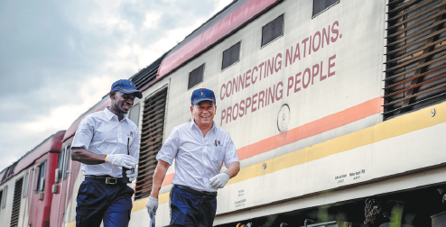

————————————
The History of the Silk Road
In 202 BC, China was under the Han Dynasty, and Emperor Wu of Han ascended the throne, initiating a policy of external expansion. To seek military alliances, Emperor Wu sent Zhang Qian as an envoy to the Western Regions. Zhang discovered much larger, stronger and faster horses in the West, which played a crucial role in helping Emperor Wu counter external invasions.This success greatly impressed Emperor Wu, prompting him to take a step further, which is the official start of the Silk Road. This ancient trade route connected the East to the West, stretching approximately 4,000 miles from eastern China to the tips of Europe.
For a more detailed story, please watch the video below.
(Source:How did The Silk Road Actually Work?)
Next, let's take a closer look at the route of the Silk Road.
———————————
Historical Cities/Countries along the Silk Road
Today, many cities along the Silk Road are world-famous tourist destinations. They are not only a piece of land, but also carry the footprints of people for thousands of years. History is like a carving knife. Although time passes, it leaves deep marks in people's memory, and brings valuable cultural heritage. If you want to walk the Silk Road again and listen to the voice of history, you can refer to the following introduction.
——————————
The Modern Silk Road
Spanning thousands of miles and years, the ancient silk routes were not only routes for trade but also roads for cultural exchanges. They made a great contribution to human progress. In the 1980s, the United Nations and some countries began to envisage the Eurasian Land Bridge, the Silk Road Initiative, and other plans, reflecting a common wish to engage in communication and cooperation.
In March 2013, President of China, Xi Jinping proposed the vision of a global community of shared future; in September and October that year, he raised the initiatives of joining with others to build a Silk Road Economic Belt and a 21st Century Maritime Silk Road (Belt and Road Initiative, or BRI). The Belt and Road Initiative is a creative development that takes on and carries forward the spirit of the ancient silk routes — two of the great achievements in human history and civilization. It enriches the ancient spirit with the zeitgeist and culture of the new era, and provides a platform for building a global community of shared future.
The BRI is founded on the principles of extensive consultation, joint contribution, and shared benefits. It advocates win-win cooperation in pursuit of the greater good and shared interests. It emphasizes that all countries are equal participants, contributors and beneficiaries, and encourages economic integration, interconnected development, and the sharing of achievements.

The picture shows the Chinese instructor Jiang Liping (right) and apprentice Horace Owiti walk past a train carriage on the Mombasa-Nairobi Railway in Nairobi, Kenya, in May. The 592-kilometer railway is hailed as a result of the Belt and Road Initiative and a route of friendship and win-win cooperation. WANG GUANSEN/XINHUA
(Excerpted from: The Belt and Road Initiative: A Key Pillar of the Global Community of Shared Future)
{kind=link}